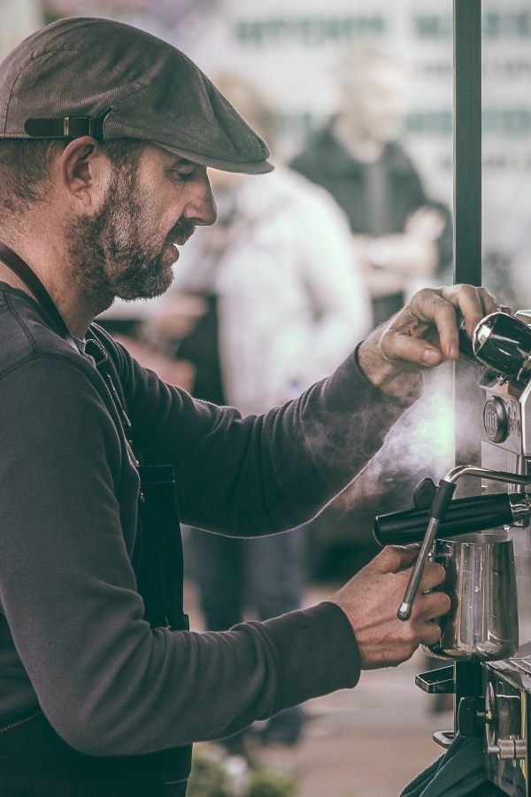
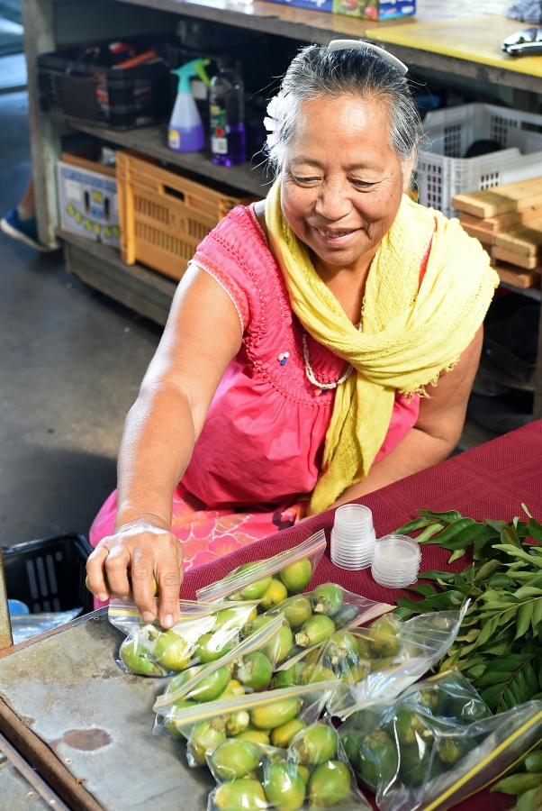

Audience
Targeted Audience
My target audience for this website are the local business owners as well as the residents of American Samoa. Prospective business owners are also a target of this site, and the residents are targeted because this site will showcase the variety of businesses that are locally owned, encouraging consumers to buy local and therefore fostering a sense of community.
Personas

Name: Johnny Bingo
Occupation: CEO of Pago Tech
Johnny owns a small tech company that he recently started up, and would like to grow his business. He is new to the area, and would like to join the Local Treasures Commerce so that he can get the word out about his business.

Name: Lina Jessop
Occupation: Cannery worker
A middle aged mother to 6 children of various ages, Lina works at the local cannery but would like some extra income as her family is planning a trip for Christmas. Lina is a hydroponic farmer who has been growing her own vegetables for her family but her farm has gotten so big that she wants to sell local because there is so much demand for fresh produce.
Scenarios
1. A wedding planner needs a large amount of produce for an upcoming wedding, preferrably from a local farmer to ensure that its fresh.
2. Government needs a local IT professional for some infrastructure projects.
3. Mother of 6 looking for White Sunday sales in the area.
4. A Relief Society president needs flower arrangements for Sunday's ward conference.
5. What local banks offer debit cards?